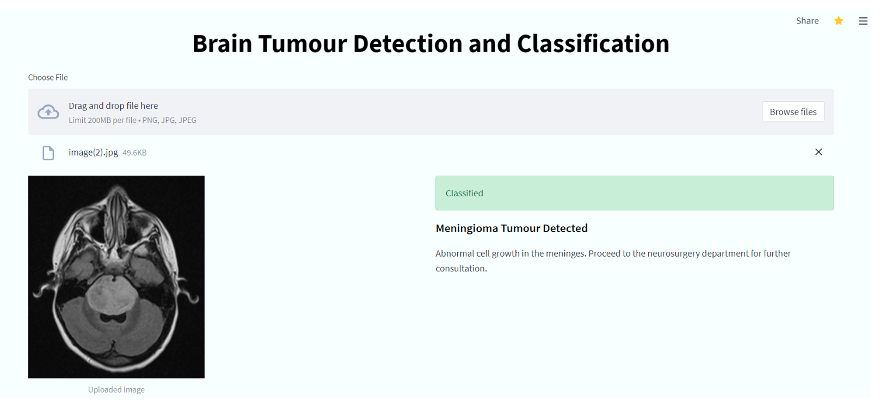
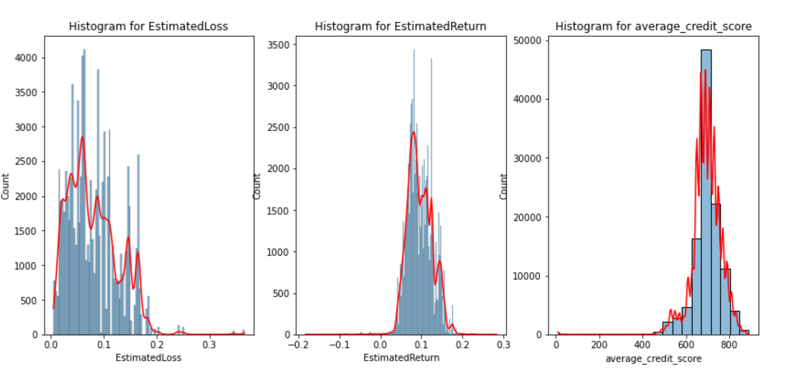
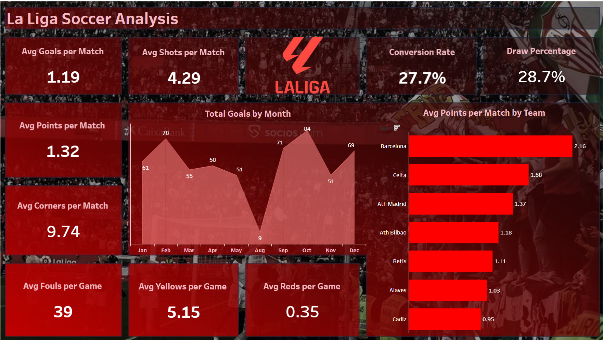
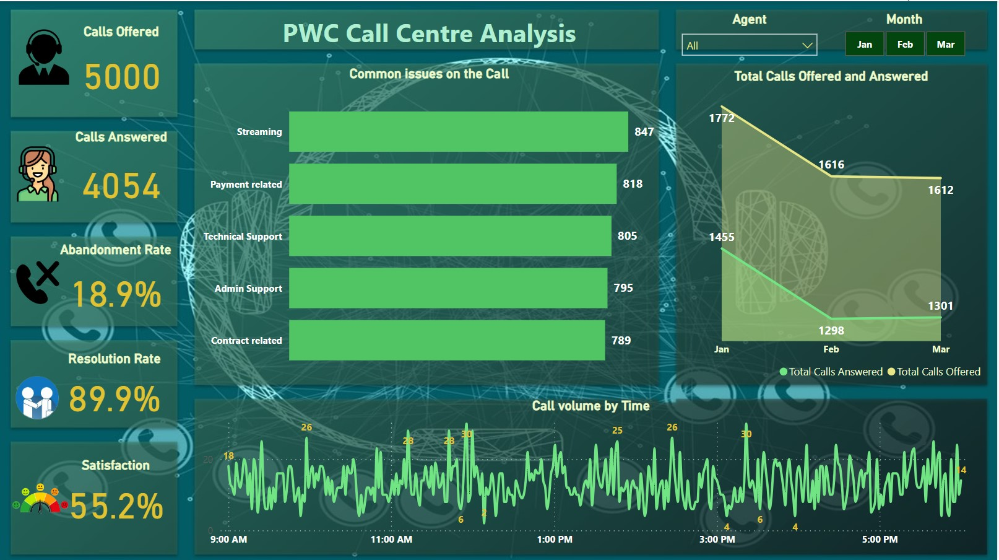

The main objective of this project was to develop a convolutional neural network that could accurately detect the presence of a tumor from an MRI scan. Furthermore, after detection, the model was to classify the tumor as either a glioma, meningioma, or pituitary tumor.

The objective of the project was to Gather, Access, Clean, Analyze and Visualize the data. The dataset was sourced from The Movie Database (TMDb) which is a collaborative database about movies. The TMDB initial database was a donation from the free Open Media Database(omdb) project.

The objective of the project was to use various regression models to predict the sales prices of the house.
This involved exploratory data analysis, using Univariate, Bivariate, and Multivariate Analysis methods. The regression models used were Multiple Linear Regression, Quantile Regression, Ridge Regression, Lasso Regression and Elastic Net Regression.
The task of the project was to create Unsupervised Machine Learning models that will inform the marketing department on the most relevant marketing strategies that will result in the highest no. of sales (total price including tax). This was possible by the Association rules using the Apriori Algorithm and also trying to detect anomalies. I had to reduce the features of the dataset and select the important features in order to perform and provide insights on the features that contributed most information to the dataset.

The task of the project was to scrap WeRateDogs tweets from Twitter using API. Then wrangle data to create interesting and trustworthy analyses and visualizations.

The objective of the project was to conduct an exploratory data analysis on a Prosper Loan dataset.

He are some of tableau dashboards I have done. The projects are mostly analysis. My focus is on clear communication and storytelling to help me effectively convey key findings and make data accessible to a wide range of audiences.

He is one of PowerBI dashboards I have done. The projects are mostly analysis. The goal is to make beautiful visualization that are easy to understand and interpret.